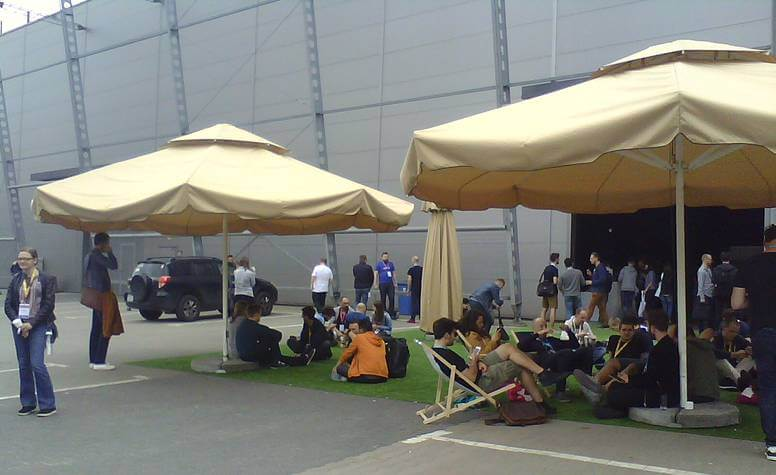
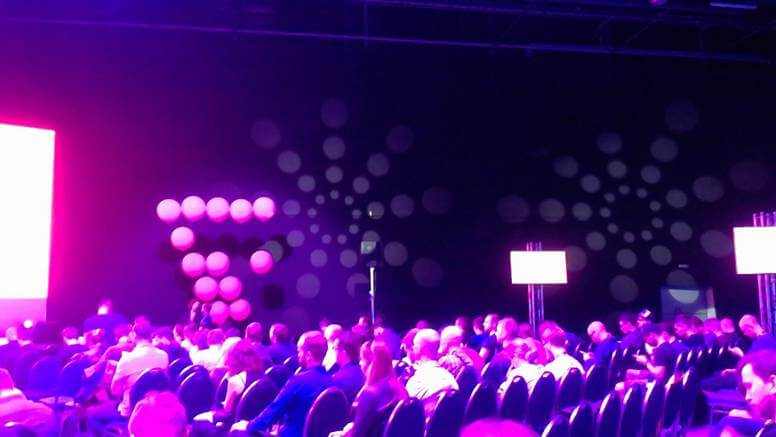
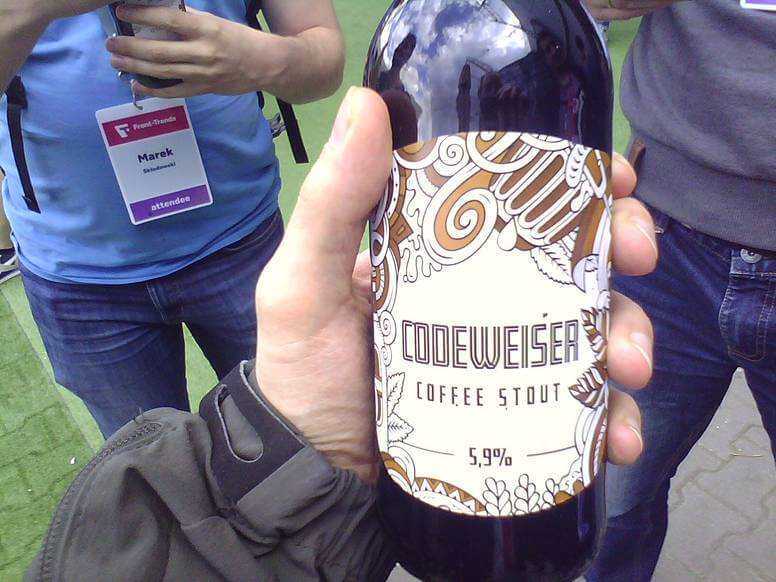

Front-Trends 2017 Or How I will-change
Front-Trends is in my opinion one of the best conferences for web developers in Poland. It has it's ups and downs but overall quality is always high.

This year there it was less awesome than year ago but still I learn something, get inspired and spend a nice four days in Warsaw.
Venue

Meh. In 2016 it was epic place, this time it was just a big hangar. No TV outside to watch talks. Only few sunbeds to sit. And garden umbrellas that were closed most of the time. Another thing I missed from last year was lack of comfortable sits in the main room. Sad but true.
Just look at the picture below.

Food && Drinks
As always delicious and vegan friendly. At last this doesn't change.
Talks


Enough of the hate. It's time for commenting on the main and most important thing - talks. Overall professional and at high level. I selected most interesting ones so you can watch them when they become available on the web sometime in the future.
Highlights

- The Power of CSS - Lot of code examples and an important tip to use 'will-change' property.
- Field-tested interfaces For the Next Billion - most people on the web have low spec android with little to no internet access (and electricity)
- Alternative Reality DevTools - grate ideas for the future of browsers developer tools
- Rendering Performance Inside Out - a lot of valuable knowledge about rendering and detailed information how 'will-change' works
- Easy and Affordable User-Testing - a few interesting tips for easy testing apps with real users
- Changing the Layout Game - a lot of code examples and CSS hacks!
Besides some awesome talks there was one particular thing that I recognize - a lot of (front-end) girls. It's known that IT conferences are mostly a guy things. But this year there was a huge diversity. I thing at last one third was women. This is a big step up. We can be proud of it.
Missing Parts

Each year there is some kind of micro-controllers talk(s). This time it was named IoT to be more trendy. They're not front-end related but gives a nice and light pause between more hardcore talks. Each time I listening to any kind of IoT lecture and hope for some security advices. It was sad that we all know that this is a problem but to this day I did not hear of any resolution for this. What was hilarious is that someone hijack internet enabled drone live on stage. And try to fly it away. Security. Yeah.

Another thing that I missed was lack of highly technical talks and code examples. Year ago there was even live coding. This time it was more talk and confusing charts. Some times it was so low tech that we feel offended. In a room full of professional developers we saw tutorial how to make a web page as icon on your smartphone or how to use RGB values to change colors of a pixel. In 2017.
Fun Parts
Right at the beginning at the registration booth I was asked if I'm the guy with the 'big, strange laptop?' :) So yes, I become recognized by my DELL Rugged Extreme computer that I use to make photos at conferences.
As usualy the Code Wise provides beer. This time they made custom bottles! How cool is that?

Summary

It wasn't perfect but overall I spend a nice three days in Warsaw. I learn something new witch is the main purpose of the conference. I meet lot of people from last year. I eat good food. I certainly come back next year.
Tags: events, javascript
Front Trends 2016
It's my first time at Front Trends a conference for javascript (front-end) developers. So far its one of the best I've been.

Right from the begining we were suprised that there are no lines for register. It was organized very well and runs smoothly. So in few seconds we were at the place, registered and ready for action!
The place


As we all know programmers are good at pilkarzyki (table soccer). Every good company have those in house. So one of the sponsors bgings two tabels and invite the best teams for little championship.
Our team lose in semi-finals.
I'm realy glad they give us ability to watch talks while being outside chilling. So i personaly take all the chances to get some sun.
The bag
Each conference needs a hipster bag with little presents (read: cheap promotional materials).

Front Trends was not an exeption. We get a bag and.. shades from WordPress :) Better than yet another pen and notes. What I love the most are those little pink stickers (3D/bumped)!
The food
The food were simply awesome. It was the first event where there are more vegan food that the one with dead animals in it. Also I'm very suprised that there were no fries, potatos or other low quality stuff. Instead I ate rice, ciecierzyca, szparagi, etc.
Yes, food is !important.
The talks

I was very sceptic about this. I do not like the "trends" and other bullshit in developer world. I was also afraid that there will be more soft talking than hard facts and practises.
How wrong I was. There were still one or two boring talks but overall the bar was set very high. Talks so far have good balance between being technical with all the real examples and interesting to the more creative minds.
Creativity and inspiration. Those two words came to my mind. There were even talks about Arduino/hardware hacking and live demoscene creation in JS!
Also stuff I'm somehow related to: SourceJS (what I did rescently at work), Angular2 (what I will be doing in future) and static websites architecture (like this blog for example).
Everyone find something intresting.
The good, the bad and the ugly
Keynotes that I feel were realy good:
- The Web In Motion by Rachel Nabors
- Static Sites Go All Hollywood by Phil Hawksworth
- Demo Reel & Tiny JavaScript by Mthieu Henri
- Syntax Highlight Everything by Kenneth Ormandy
- Computer Assisted Arts and Crafts by Mariko Kosaka
- Talking over the web platform with Angular 2 by Todd Motto
- CSS fo software Engineers for CSS Developers by Harry Bartlett
And just look at this list. Normaly I point out two, max three talks that I remember and recommend. Now the list grows every day. And the other talks was still good but just not interesting for me personaly.
The bad thing was that there were no free bear.. But we have a pool!

The weather were not-so-perfect. First day was very cold and rainy, second with lot of clear sky and sun but cold, cold winds. This helpfuly changed on the last day to perfect summer day :)
And to be honest, the only ugly thing I recal was the toilets. And lets forget about this.
Afterparty
This was epic. We drank, we network and we all admire the aww droppnig view of Warsaw at the sunset.n
Fame & Camera replacement
I was recognized by some guy as "that game developer". We chat about Godot being superior to the Unity3D. That was nice.
This time I did not take any camera with me. I did not even have a smartphone. So to document this event I was using my Dell (7204) in tablet mode. This (alogn with the acutal dell look) gather a lot of attention. First of all I was the only crazy dude that make photos using some big and bulky "thing". Second, I was the only one that use non-Apple laptop :)
So yes, all photos here are made using a linux laptop.
Tags: events, javascript